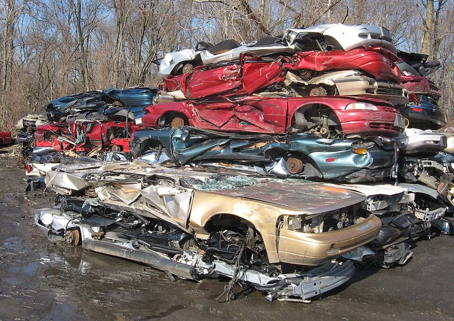
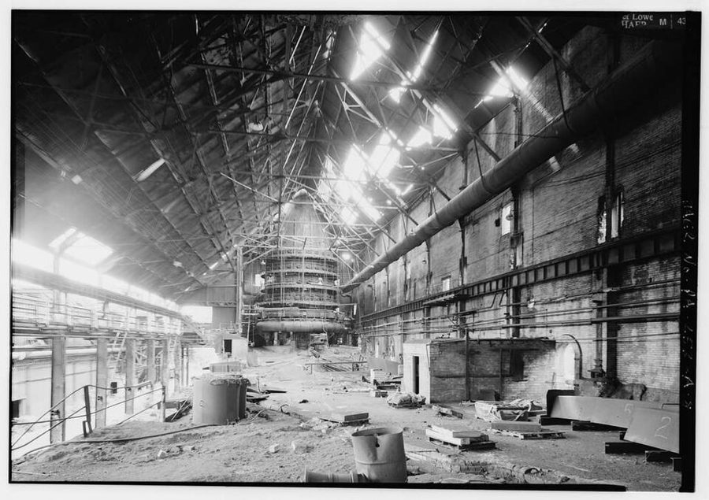

这一章在做什么
适应新环境的一章。几乎全是 Dan 一个人在讲，对话只有两处：和工头，和法官。时间从出院后的头两天写到第二年开春，地点是 2000 年的「大洛杉矶」。
它不按时间顺序走：第一段先报结果，再倒回去讲经过。前半讲糊口和落脚，口语俚语最密；后半他用工程师的眼光打量新世界，机器和设计的行话多。
抓两样：他给自己排的先后次序 ；新世界里哪些事让他服气 ，哪些事他想不通 。
真实的洛杉矶，2007 年 12 月。书里的 2000 年「大洛杉矶」是 1956 年想出来的，和这张照片不是一回事；相同的只有冬天山上的雪，和城里的人多。
Nserrano，CC BY-SA 3.0，维基共享资源
人物
都是虚构的人。老人物只写到上一页结束时你已经知道的。这一页新出场的三个人都没有名字。
Dan Davis 叙述者「我」 睡了三十年，上一页刚出院。保险公司早就倒了，当年的投资一分不剩，口袋里只有疗养所给的 400 美元。专业也落后了三十年。
当班的头儿新 shift boss，没有名字 场景 1 里 Dan 的上司。管 Dan 叫 son，爱讲道理。
法官新 没有名字 场景 3。年轻，一边看报一边办案。
推销员新 没有名字 场景 6，Aladdin 公司展厅里的人。
Mr. Doughty 只提到，没出场 疗养所的财务主任。上一页他告诉 Dan，吃一顿像样的晚饭要十美元。
Belle 和 Miles 只提到，没出场 三十年前骗走 Dan 的公司、又把他送进冷眠的两个人。是死是活，Dan 不知道。
Ricky 只提到，没出场 全名 Frederica Virginia Gentry，Miles 的继女。Dan 入睡前把 Hired Girl 的股票寄给了她，写明由 Bank of America 代管到她二十一岁。算起来她现在四十一岁。
Pete 只提到，没出场 Dan 的猫。三十年前那一夜逃出了门，没能跟 Dan 一起睡。Dan 认定他早已不在了。
1970.12.4
被送进冷眠
睡了三十年
2000.12.13 周三
在疗养所醒来
12.14
出院
出院时手里有
400 美元，够吃一个星期
一身 2000 年的衣服
两只手，一个脑子
一张三十年前的工程学位
没有了的
股票和存款：保险公司倒了
Pete
Ricky 的下落
跟得上时代的本事
本站示意图。都是上一章交代过的。这一页从出院后第二天说起。
场景地图
这一页是第 6 章的第 1–84 段，本站按场景分成 7 段。粗体是每个场景开头的几个词，照着它在书里找位置；读完一个场景回来打个勾。
I GOT A JOB the second …约 1050 词 先讲几个惹祸的词，再讲那份工作。和工头那段是抬杠式的经济学，留意谁觉得谁不懂。 Where to live had been …约 450 词 倒回出院那天。他列了一张编号的清单，留意排第一的是什么、理由是什么。 Jails have improved. This one …约 550 词 法庭。对话很快，法官的口气中途变了一次，留意是哪句话让他变的。 I WOULD NOT want anyone …约 650 词 他给新世界打分。最服气的东西一大一小，物理名词集中在「大」的那样上。 It was still early in …约 650 词 工程师手痒。整段是他在脑子里设计一台机器，留意他说真正难在哪里。 I knew that they were …约 600 词 去看一台绘图机。留意他站到机器跟前时的反应，和他给自己的解释。 I knew that Belle and …约 600 词 找人。全是查档和公函，法律、银行的套话多。留意每条路各查到了什么。
背景：作者默认你知道的事
这些都是真实世界里的东西，1950 年代的美国读者一看就懂。按在书里出现的顺序排。
场景 1 废钢、高炉和匹兹堡
压扁了等着回炉的报废汽车。场景 1 的工作场地就是这类地方。
IFCAR，公有领域，维基共享资源（2008 年摄于马里兰州，与本书无关） 
匹兹堡钢铁公司 Monessen 厂的高炉，在匹兹堡南边的河谷里。照片出自美国的工业遗产档案（HAER）。
Historic American Engineering Record，公有领域，维基共享资源 匹兹堡（Pittsburgh）是美国的钢都。高炉（blast furnace）把铁矿石炼成铁水；炼钢还要掺进大量废钢（scrap），所以收废铁是钢铁业正经的一环，报废汽车是它的一大来源。
书里说废车「运回匹兹堡」，就是送回钢厂。
场景 3 流浪罪和公设辩护人美国各地长期有流浪罪（vagrancy）：没有住处、说不出正当职业、夜里在公共场所逗留，警察就可以抓，常见的判法是罚款或关三十天。1970 年代这类法律才被最高法院判定违宪。
公设辩护人（public defender）是政府出钱、给请不起律师的被告配的律师。这个制度 1914 年最早出现在洛杉矶县。
场景 4 引力是「空间的形状」爱因斯坦 1915 年的广义相对论说：引力不是一种拉力，是质量把时空压弯了，物体只是顺着弯曲的时空走。描述这种弯曲的数学叫张量微积分（tensor calculus），是物理系研究生的课，工科一般不学。
Dan 说学校教他「引力没法对付，因为它就在空间的形状里」，指的是这个。
场景 4 Babson 和他的引力研究
Babson 的基金会 1960 年代在十几所大学立的石碑之一。碑文说：等科学弄清引力是什么、怎样起作用、怎样控制它，学生们将得到多少好处。
Elizabeth B. Thomsen，CC BY-SA 3.0，维基共享资源（Gordon College，碑上刻着 1964 年立）
Roger Babson 是靠股市预测发财的商人，办了一所商学院 Babson Institute。1948 年他又出钱成立「引力研究基金会」，悬赏征求隔绝引力的办法。物理学界当它是个笑话。
书里把学院和基金会并在一起说了。
场景 5 ough 的六种读法，和世界语
同样四个字母 ough，六种读法
though
韵脚同 go
tough
韵脚同 stuff
cough
韵脚同 off
hiccough
韵脚同 cup
plough
韵脚同 cow
through
韵脚同 too
本站示意图。hiccough（打嗝）现在通常拼作 hiccup，plough（犁）美国拼作 plow。
英语拼写和读音对不上，是英语国家小学生的共同苦处，上面六个词是最常举的例子。
世界语（Esperanto）是 1887 年发表的人造语言，一个字母只有一个读音，照着拼写就能念。书里拿它和英语对比，用的是这一点。
场景 5 口述、速记员和录音机
1937 年，美国农业部长 Henry Wallace 对着 Dictaphone 录音机口述讲稿。原图说明特意写了一句：他没用速记员。录下来的话仍然要由打字员听着打出来。
Harris & Ewing 摄，公有领域，维基共享资源
那时写商务信的办法是口述（dictation）：老板说，速记员（stenographer）用速记符号记下来，再打成字。这是当年女性最常见的办公室职业，高中里就教速记和打字。
生僻词，老板得一个字母一个字母拼给她。
场景 6 凭笔触认画家
伦勃朗 1659 年自画像的局部。厚涂的颜料、从暗处亮出来的脸，是他的招牌。
Rembrandt，公有领域，维基共享资源
鲁本斯（Rubens）和伦勃朗（Rembrandt）是十七世纪的两位大画家，传世作品多，仿作和作坊货也多。画上没有可靠的签名时，鉴定家靠笔触、用光、构图、颜料来判断是谁的手笔。
书里拿这个来比工程设计。
场景 7 美国没有户口本美国没有户籍，也没有全国统一的身份证。要找一个人，只能去翻各自独立的名册：电话簿、各县的选民登记册（Register of Voters）、FBI 的指纹档案、社会保障号（1936 年起发，本来只为记养老金的账）。
Information 是电话公司的查号台。My Country ’Tis of Thee 是一首爱国歌曲的头一句，书里拿它当「我的祖国」的戏称。
书里的世界
下面都是设定，别去查历史。上一页已经见过的不再列：Eager Beaver（Dan 认定它就是自己的 Flexible Frank）、the Ways、Sticktite、grabbie、Great Asia。
书里的说法 在书里是什么 真实世界里 Great Los Angeles 2000 年的洛杉矶。六周战争里没挨炸，难民涌进来再没走。大到 San Bernardino 都成了它的一个 Borough（区）。烟雾已经治掉了。 2000 年洛杉矶市约 370 万人。San Bernardino 在东边约 100 公里，是另一座城市。烟雾比 1950 年代轻得多，没有根除。 ground limousines / ground cars / turbobuggies 在地面上跑的汽车，涡轮驱动。特意说 ground，是因为已经有不在地面上跑的。 克莱斯勒 1963 年造过五十多辆燃气涡轮轿车给人试用，没有量产。 Eisenhowers 和 Cadillac、Chrysler、Lincoln 并列的汽车牌子。 没有这个牌子。Lincoln 是拿林肯总统命名的；这本书写的时候艾森豪威尔正当总统，作者照样造了一个。 gravJumper 一种个人的交通工具，只有名字。 — price-support loans（给汽车的） 政府按保护价放贷，收下卖不掉的汽车。 真实的价格支持只针对农产品，见下一节。书里把它搬到了汽车上。 a kilometer on their clocks 里程按公里算。 美国 1975 年立法鼓励改用公制，路牌至今还是英里。 guild dues, defense tax, welfare mutual fund 工资里扣掉的几项：行会会费、国防税、福利互助基金。没解释。 同一句里的 social security 和 income tax 是真的。 培养槽里长的肉（surrogates） 餐馆里的肉多半是 tank 里培养的代用品。真肉贵，黑市上的肉可能带放射性。 2013 年，第一块实验室培养的牛肉汉堡在伦敦公开试吃。 New Plan 城市改造的新规划。只有名字。 — barracking 2000 年的一个罪名。书里不解释，得从上下文猜。 现实里 barrack 是英国、澳大利亚口语里的「起哄」，和这里无关。 labor-company parole 一种可以代替坐牢的处置。没解释。 — zombie recruiter 没解释。上一页的报纸标题里有一条 anti-zombie law。 — Surplus & Salvage Authority 政府机构，字面是「过剩物资与废品回收局」。 — the common cold 普通感冒已经被攻克。 至今没有。 the research colony on Venus 金星上有科研基地。 1960 年代起探测器测出金星表面四百多摄氏度、约九十个大气压。没有人去过。 NullGrav 在局部、临时改变空间的形状，让重物失重。理论出自 University of Edinburgh。上一页的 null、lackweight 是从它来的词。 没有。 能打字的机器 有人发明了听写打字机，但只适用于世界语那样拼读一致的语言。 1997 年起有了面向大众的连续语音听写软件（Dragon NaturallySpeaking）。 Drafting Dan Aladdin 公司出的半自动绘图机，按键画线。 1963 年 MIT 的 Sketchpad 第一次让人在屏幕上画工程图；1982 年 AutoCAD 上了个人电脑。 Dictation Daisy Dan 给一台机器起的名字，照 Hired Girl、Window Willie 的老办法押头韵。 — national office in Cleveland 全国电话查号的总部，可以付费查全美国。 — a quarter of a billion people 美国人口两亿五千万。 2000 年人口普查是 2.81 亿。
这一章的行话，先用中文过一遍
场景 1 的那场争论靠一个真实的政策，场景 5 靠一门真实的学问。先把这两样弄明白。
价格支持贷款（price-support loan）
农民
政府
粮食作抵押
按保护价放贷
市场
政府仓库
市价高于保护价
还钱，赎回粮食去卖
市价低于保护价
粮食归政府，贷款不用还
本站示意图。对农民来说，保护价就是保底价：最坏的结果是把粮食「卖」给了政府。
1930 年代起，美国政府用这个办法给农产品托底。它叫贷款，其实是保底收购：粮食是抵押品（security），价钱不好，农民就不赎了。
到 1950 年代，政府仓库里堆满了卖不掉的小麦、玉米、黄油，低价卖到国外又会被别国骂作倾销（dumping）。这是当时报纸上的常年话题，读者人人知道。
信息论和「上下文统计」
听到的音
只有一个
their
there
they’re
后面是名词
… car, … books
后面是 is / are
… is a way
后面是 -ing
… going home
本站示意图。读音给不出答案，前后的词能给出概率。今天的输入法选同音字，用的是同一个办法。
同音词（homonym）读音相同、拼写不同。只听声音分不出来，要看上下文。
信息论（information theory）是香农 1948 年提出的：语言里每个词出现的概率取决于它前后的词，这种规律可以统计、可以计算。这本书写的时候它才问世八年，是最时髦的学问。
英文 中文 一句话 surplus 过剩（物资） 产出来卖不掉的那部分。 security 抵押品，担保 借钱时押给对方的东西。不是「安全」。 dumping 倾销 在国外用低于正常的价钱抛售，挤垮当地同行。 open market 公开市场 谁都能来买卖、价钱随行就市的市场。 export market 出口市场 卖到国外去的那部分生意。 standard of living 生活水平 — first patent 最早的一项专利 一件产品常有几十项专利，铭牌上按号码列出。上一页说过，当时美国专利保护十七年。 list price 标价，目录价 厂家价目表上的价钱，实际成交要打折。 trust / trust officer / beneficiary 信托 / 信托部职员 / 受益人 把财产交给银行代管，到期交给受益人。 assignment 转让（书） 把股票、专利的所有权写给别人的文件。第 2 章见过。 working parameters 工作参数 一样东西在实际使用中的各项指标和限度。 production model 量产型号 相对于样机（pilot model）。
词与短语
词条按在书里出现的顺序排，按场景分组。斜体小字是它所在的那句话里的几个词，方便你在书里找到。
场景 1 I GOT A JOB the second …
a run-in with the law
… had a mild run-in with the law …
和警察、法院打了一回交道
run-in 是冲突、摩擦。the law 口语里指执法的人。
set down
… had been set down in Omsk, or …
被放到（某地）
Omsk 在西伯利亚，Santiago 是智利首都，Djakarta 是雅加达的旧拼法。意思是随便哪个陌生的外国城市。
in one bite
… to take it in one bite. …
一口吞下
三十年的变化别人是一天天消化的，他是一口吃进去。
a mouthful of knuckles
… giving me a mouthful of knuckles. …
照嘴上来一拳
knuckles 是指关节。「请你吃一嘴拳头」。
take my word for it
… Don’t take my word for it …
光凭我说就信
这里 word 是「我的话」，同一句里另外两个 word 是「那个词」。
kink
The word was “kink.”
（1970 年的意思）绳子、头发上的扭结；怪念头
2000 年它成了什么意思，书里不说，只知道不能当着女士讲。现实里这个词后来也添了和性有关的意思。
host
… “host” used to mean the man …
（1970 年的意思）请客的男主人
上一页报纸上有 HOST-MOTHERS 要求涨价的标题。host 在生物学里是「宿主」。
get along
… But I got along. The job …
凑合着过下去了
不是「相处」。get along = 应付得来。
scrap
… back to Pittsburgh as scrap. Cadillacs, …
废料，废钢铁
scrap iron 是废铁。
on their clocks
… a kilometer on their clocks. Drive …
里程表上
clock 口语里指汽车的里程表。一公里都没跑过。
jaws
… Drive ’em between the jaws, then …
（机器的）颚板，钳口
本义是上下颌。后面还说到这台机器的 teeth。
not so much as
… didn’t own so much as a gravJumper. …
连……都没有
ride the Ways 是坐传送带上班。
security against
… accepted as security against price-support loans. …
作为（贷款的）抵押
见上面的行话。
junk
… the government junks them and sells …
当废品处理掉
名词「破烂」直接当动词用。
run down
… want to run down the standard of …
把……拉下去，弄垮
dump
… we started dumping cars abroad we’d …
倾销
本义是倾倒垃圾。场景 3 里法官说 dump their riffraff on us，用的是本义。
sore at
… we’d get everybody sore at us—Japan, …
对……恼火
sore 是恼火，第 1 章见过。
draw out
… library and draw out some books. …
借出来
从银行取钱、从图书馆借书都可以用 draw out。
Sirrah
… “Sirrah, I am an alchymiste. Hast …
喂，这位（古语）
整句是仿莎士比亚时代的腔调：alchymiste 是 alchemist（炼金术士）的古拼法，Hast need of = Do you need，art 是技艺。du Pont 是第 2 章提过的化工巨头。
workmanship
… The workmanship was sloppy and they …
做工
sloppy：马虎，稀松。
power plant
… lacked even a power plant, I …
发动机
不是发电厂。车、船、飞机的整套动力装置都叫 power plant。
Great jumping Jupiter
… “Great jumping Jupiter, son, surely you …
我的老天爷
不带脏字的惊叹，押头韵。
shut up and stay shut
… I shut up and stayed shut. …
闭上嘴，再没张开
上一回是 So I shut up，这一回加了半句。
esoteric
… economics is too esoteric for me. …
玄奥，只有圈内人才懂
这句是反话。
in my book
… at all in my book; all …
照我的标准
in his various disguises
… Frank in his various disguises. Frank …
换了各种外壳的（Frank）
disguise 是伪装。意思是这些机器里头都是他那套设计。
spot
… expected to spot at least one …
发现，看出
名词是斑点，动词是「一眼认出」。
trouble crew
… and send for a trouble crew. …
抢修班
First things first
… kept me eating. First things first. …
要紧的先办
it kept me eating：靠它有饭吃。
guild dues
… social security, guild dues, income tax, …
行会会费
dues 是按期交的会费。
take home
… fund I took home about sixteen …
（扣完各项后）到手
take-home pay 是税后工资。
plate dinner
… a very decent plate dinner for …
一盘装的份饭
主菜配菜盛在一个盘子里的定食。decent 是「像样的」。
I would defy anyone to
… I would defy anyone to tell …
我敢说谁也做不到
defy 是「向……挑战」。tell 在这里是「分辨」。
hamburger steak
… hamburger steak started life in a tank …
碎牛肉饼
tank 是培养槽。
bootleg
… going around about bootleg meat that …
私贩的，黑市的
来自把酒瓶藏在靴筒里私卖的老把戏，1880 年代就有这个词，禁酒时期叫开了。
surrogates
… was perfectly happy with surrogates. …
代用品
场景 2 Where to live had been …
be treated to
… not been treated to the one-second …
受到……的「款待」
反话。treat someone to 是请客。
slum clearance
… the one-second slum-clearance plan in the …
贫民窟清除
1950 年代美国真有的市政工程：成片拆掉旧街区。「一秒钟的」清除计划，指核弹。
more of a condition
… it is more of a condition—had …
与其说是城市，不如说是一种病
condition 指身体的毛病，如 a heart condition。
check out of
… day I checked out of the sanctuary …
办手续离开
退房、出院都用它。
settle someone’s hash
… Miles and settle their hash—without going …
收拾某人，跟某人算总账
hash 是剁碎的肉菜。老式说法。
a slug of
… and (7) a slug of things, like …
一大堆
第 4 章 Belle 说过 a slug of insurance。
flunk
… almost flunking my freshman year in …
（考试、课程）不及格
freshman year 是大学一年级。
when the music stopped
… when the music stopped you were …
音乐一停（你就没椅子坐）
抢椅子游戏（musical chairs）：椅子比人少一把，音乐停时没抢到的人出局。
run concurrently
… these priorities ran concurrently, of course; …
同时进行，并行
和程序里的 concurrent 是同一个词。
bone
… while I was boning engineering. But …
啃书，猛补
学生俚语，现在多说 bone up on。
a sack
… ahead of hunting for a sack because …
睡觉的地方
军队俚语，sack 是铺位。hit the sack = 上床睡觉。
clear out to
… chased an ad clear out to San …
大老远一直跑到
clear 作副词：一直，整整。chase an ad 是追着一则招工广告跑。
a flop
… should have rented a flop at once; …
便宜的铺位
flophouse 是最便宜的小客店。
play it real smart
… instead I played it real smart and …
自作聪明
反话。real 口语里当 really 用。
rooming house
… on four rooming-house waiting lists and …
按间出租的公寓
wind up
… lists and wound up in the park. …
落得，最后到了
wound 读 /waʊnd/，是 wind 的过去式，不是「伤口」。
subtropical
… winters are subtropical only if you …
亚热带的
这一句有个文字游戏，见读后。
round up
… they rounded me up with the …
一并抓走
本来是把牲口赶到一处。vagrants 是流浪汉。
场景 3 Jails have improved. This one …
be charged with
… I was charged with barracking. The …
被控（某罪）
charge 这里是指控，不是收费、充电。
parole
… take a labor-company parole. Next. …
假释
Next 是叫下一拨。
running six days late
… are running about six days late …
排期晚了六天
run late：进度落后。火车晚点也这么说。
if the Court pleases
… the Court, if the Court pleases. …
如蒙法庭准许
法庭上的敬语。the Court 指法官本人，用第三人称。
bailiff
… said to the bailiff, “Take the …
法警
Spill it
… back to me. “Spill it. But …
说吧，倒出来
spill 是把东西洒出来。
I’ll warrant
… But I’ll warrant you won’t like …
我敢担保
老派说法。第 1 章的 search warrant 是名词「令状」。
One of those
… disgusted. “One of those, eh? I’ve …
又是那种人
riffraff
… they could dump their riffraff on us. …
社会渣滓，闲杂人等
boot
… wish I could boot you back to …
一脚踢（回去）
paved with gold
… not, repeat not, paved with gold. …
遍地黄金
老移民的传说：新大陆的街道是金子铺的。repeat not 是军用电报的写法，重复一遍免得听漏。
get taken
… My mother got taken by them …
被坑了，上了当
take 口语里有「骗」的意思。
premiums
… she had paid premiums for twenty …
保费
不是「高级的」。
场景 4 I WOULD NOT want anyone …
roll around
… 2001 when it rolled around a …
（日子、季节）到来
odds-on
… Millennium was odds-on the most wonderful …
十拿九稳是
赛马用语：赢面大于输面的那匹马。
lick
… they could have licked the housing …
打败，解决掉
口语。下一段 licked the common cold 是同一个用法。
the Sierras
… kept rolling over the Sierras—and their …
内华达山脉
加州东边的大山。翻山过来的，就是从美国其他地方来的。
postnasal drip
… nobody had a postnasal drip. That …
鼻涕倒流
come of it
… expected anything to come of it—and …
从中产生结果
nothing came of it：不了了之。
to be sure
… temporarily and locally, to be sure, …
诚然，当然
插入语，先让一步。
Mother Terra
… field relation with Mother Terra, so …
地球母亲
Terra 是拉丁语的「大地」，科幻小说里常用来叫地球。
foot-pounds
… store all those foot-pounds in, or …
英尺磅（功和能量的单位）
把一磅重的东西举高一英尺所做的功，约 1.36 焦耳。
ride a long edge
… ice skater riding a long edge. …
压着冰刀的一侧刃滑出一道长弧
edge 是冰刀的刃。不用蹬冰，靠惯性滑。
start in where … leaves off
… starts in where tensor calculus leaves …
从……结束的地方才开始
leave off 是停下。意思是比张量微积分还深。
savvy the skinny
… has to savvy the skinny of a …
摸清门道
savvy 是「懂」，来自西班牙语 sabe；the skinny 是俚语「内情」。
make my jaw sag
… with Sticktite made my jaw sag. …
让我张着嘴合不上
sag 是往下垂。
grandpappy
… My grandpappy was born in 1890; …
爷爷
乡下土话。
out of joint
… time. I was out of joint. …
错了位，和周围对不上榫
本义是关节脱臼。哈姆雷特的名句 The time is out of joint 说的是时代，Dan 说的是自己。
场景 5 It was still early in …
itch to
… when I began to itch to …
手痒，巴不得
featherbedded
… leave my featherbedded job and get …
因人设岗、白养人的
featherbedding 是美国劳资纠纷里的真词：为保住工人饭碗而留下的多余岗位。字面是「羽毛褥子」。
back to the old drawing board
… back to the old drawing board. …
回到绘图板前
习语 back to the drawing board 是「推倒重来」，出自 1941 年《纽约客》的一幅漫画。Dan 用的是字面意思，顺带玩了这个习语。
art
… things possible under current art which …
技术，工艺水平
专利和工程用语，不是艺术。state of the art 就是「现有技术水平」。这一页出现了好几次。
Mohammed must go to the mountain
… Mohammed must go to the mountain. …
山不过来，人就过去
英语谚语，出自培根的随笔。这里：语言不肯迁就机器，机器就得迁就语言。
cockeyed
… sort out the cockeyed spelling of …
歪七扭八的，不讲理的
本义是斜眼。sort out：理清。
sound-key
… words, to sound-key every word in …
按读音给（每个词）编码
Dan 自己造的动词，key 是「编上键码」。
field
… a stenographer to field a word like …
接住，应付
棒球：守场员接球。后面三个怪词是故意挑的生僻词，不用认识。
depressed
… with the memory key depressed and …
（键）按下去的
不是「沮丧」。
hitch
… The real hitch was homonyms. Dictation …
卡住的地方，麻烦
第 2 章设计 Frank 时用过同一句式。
homonyms
… a dictionary of English homonyms? It …
同音词
context statistics
… information theory through context statistics and …
上下文统计
见上面的行话。
smooth out the bugs
… where I could smooth out the bugs, …
把毛病一个个磨掉
bug 指机器的小毛病，早在计算机之前就是工程师的行话。
trade catalogues
… the bugs, trade catalogues, professional journals, …
行业产品目录
trade 是「行业」。厂家印的零件目录，设计时照着选型。
subprofessional
… at least a subprofessional job. I …
够不上工程师的辅助技术岗
soak up
… art I had not yet soaked up—repeatedly …
吸收，学进去
像海绵吸水。下一段的 soak in through my skin 是同一个比方。
first stab at
… than my own first stab at it …
头一回的尝试
stab 是戳一下。场景 7 还有 one more stab。
land a job
… that I could land a job as …
弄到一份工作
land 是把鱼钓上岸。junior draftsman：初级绘图员。
场景 6 I knew that they were …
play
… could learn to play one in twenty …
像弹琴那样操作
把机器说成乐器。后面还有 I could play it better than he could。
bear the same relation to
… a machine that bore the same relation …
它之于……，正如……之于……
bore 是 bear 的过去式。类比句式：A 对 B，等于 C 对 D。
longhand
… did to writing in longhand. I …
（一笔一画的）手写
和 shorthand（速记）相对。
railroad
… it’s time to railroad, people start …
修铁路（动词）
上一章说过类似的话。见读后。
dip into my savings
… I dipped into my savings, bought …
动用了一点积蓄
dip 是把勺子伸进去舀。
the latter
… stuffed the latter with newspapers, and …
后者
指刚提到的两样里的第二样，这里是公文包。
with a view to
… salesrooms with a view to “buying” …
为了，打算
后面接 -ing。引号是 Dan 自己加的。
déjà vu
… Déjà vu, the psychologists call it …
似曾相识的感觉
法语，字面是「已经见过」。
had I had time
… developed it, had I had time …
假如我当时有时间
= if I had had time。省掉 if，把 had 提前，书面的虚拟语气。
brushwork
… or a Rembrandt by the brushwork, …
笔触
pigment 是颜料，composition 是构图。
there is something to
… if there wasn’t something to telepathy …
……还真有点道理
telepathy：心灵感应。
in the state I was in
… In the state I was in I …
以我当时那副样子
state 是精神状态。
pick up
… whom I had picked up some of …
（不知不觉）学来
look someone up
… so, I’d look him up someday...get …
登门去找某人
不是「查字典」的 look up。
pull myself together
… I managed to pull myself together and …
定下神来
hardly need have bothered
… He hardly need have bothered; Drafting …
他其实不必费这个事
need have done：做了，但没必要。
on the dotted line
… my signature on the dotted line. …
在（合同的）签名虚线上
sign on the dotted line = 正式签约。
场景 7 I knew that Belle and …
listed
… of the three was listed in the …
登记在（电话簿上）
unlisted number 是不公开的号码。
for that matter
… nor for that matter anywhere in …
其实……也一样
补一句范围更大的话时用。
quadruple fee
… A quadruple fee, it was, as …
四倍的费用
Belle 要按两个姓各查一遍。
vice-president in charge of foolish questions
… vice-president in charge of foolish questions, …
「专管蠢问题的副总裁」
玩笑。大公司副总裁多，各管一摊；Dan 给他编了个头衔，还排到第十七。
a trail thirty years cold
… Picking up a trail thirty years cold …
一条凉了三十年的线索
打猎用语：气味新鲜的踪迹是 hot，散了就是 cold。pick up a trail：找到踪迹跟上去。
succumb to
… had never succumbed to police-state nonsense, …
向……屈服
police state：警察国家。
dossier
… to have a dossier on each …
（关于某人的）档案
tap
… in a position to tap such a file …
接进去取用
tap 是在管子、电话线上接个口。in a position to：有条件做。
lavishly subsidized
… a detective agency, lavishly subsidized, could …
给足了经费的
utilities records
… dug through utilities records, newspaper files, …
水电煤气公司的用户记录
utilities 是公用事业。
form letter
… I got back a form letter informing …
套印好的格式回信
form 是固定格式。等于今天的自动回复。
divulge
… could not be divulged even to …
透露
negative information
… giving me the negative information that …
「没有」这一条信息
不是负面消息。查询返回空，也是一个结果。
in favor of one …
… a trust in favor of one Frederica …
以一个叫……的人为受益人
in favor of：受益方是。one + 人名：公文里说「某个叫这名字的人」。
those birds
… Somehow those birds had managed to …
那两个家伙
bird 俚语里指人，带轻蔑。
withdrawal transcript
… taken a withdrawal transcript in 1971. …
转学用的成绩单
withdrawal 是退学、离校；transcript 是成绩单。
Further deponent sayeth not
… Further deponent sayeth not. …
「具结人别无陈述」
宣誓书结尾的老套话。deponent 是作证的人，sayeth 是 says 的古体。意思是：记录到此为止，再没别的了。
值得停下来的句子
Great Los Angeles winters are subtropical only if you accent the “sub.”
— 场景 2，Dan 半夜在公园里走着取暖。本站译：大洛杉矶的冬天说是亚热带，得把重音放在「亚」字上才算数。
把一个词拆开来抬杠。sub- 是「在……之下」：subtropical 是「比热带差一等」。平常念这个词，重音落在 tropical 上；Dan 说，得重读前缀才是实情。
这一页还有两处同样的手法：one-second slum-clearance plan ，和把 city 改口成 condition 。
When it’s time to railroad, people start railroading.
— 场景 6。本站译：到了该有铁路的时候，自然有人动手修铁路。
名词 railroad 直接当动词用。这是 Dan 的发明观：一项发明要靠周边技术都齐备才做得出来，条件一到，会有好几个人各自想到同一处。
上一章他用这个道理说过 Langley 的飞机生不逢时，这里他用它来安慰自己：绘图机不是谁偷了他的，是时候到了。读到这句时留意他前后的口气，他是真信，还是在劝自己。
In a quarter of a billion people one little girl can drop out of sight like a pebble in the ocean.
— 这一页的最后一句。本站译：两亿五千万人里，一个小姑娘说不见就不见了，像一颗石子落进大海。
前面一整个场景是公函、名册和否定句，到这里收成一个画面。drop out of sight 是「从视野里消失」，接上 pebble 之后 drop 又变回字面的「掉下去」。
注意他说的还是 little girl ：照年月算 Ricky 已经四十一岁，在他心里她还是十一岁。
检查一下理解
先在心里答，再点开。答错的那题，回书里把对应的场景再读一遍。
1.（场景 1）工头说，把新车压成废铁「只是看起来浪费」。他的理由有哪几条？Dan 被说服了吗？
三条：不造车工人就失业、生活水平下降；钢厂本来就缺废钢；运到国外卖是倾销，会得罪各国。Dan 没被说服，只是不再开口。他那句「经济学对我太玄奥」是反话。
2.（场景 1）Dan 在岗位上到底干什么？他为什么说这不算一份 job？
活全是 Flexible Frank 那一类机器干的。他只是站在小平台上握着一个总停开关，而且每班得「发现」至少一次故障、叫一回抢修班。这个岗位是为了让人有班上才设的。
3.（场景 1）一天挣 21 美元，他到手多少？Mr. Doughty 说的饭价准不准？
扣掉六项之后到手大约 16 美元。Doughty 说一顿像样的晚饭十美元，实际上三美元就能吃到不错的份饭，条件是别坚持要真肉。
4.（场景 2）清单上「找工作」为什么排在「找住处」前面？这个次序给他惹了什么麻烦？他认错了吗？
理由是钱是别的一切的钥匙。他为一则招工广告跑到 San Bernardino，扑了空又折回市区，四家公寓都要排队，半夜躲进传送带车站，被当流浪汉抓走。他不认错：场景 3 末尾他仍说逻辑没问题，有钱的人到哪儿都算有家。
5.（场景 3）法官起初很不耐烦，后来为什么肯帮他？
不是因为他是 Sleeper，法官正讨厌这种人。转折在 Dan 说到自己被 Master Insurance 坑了：法官的母亲交了二十年保费，也被这家公司坑过。他写了张卡片，让 Dan 去 Surplus & Salvage Authority 的招工处。
6.（场景 4）NullGrav 省掉的是哪一部分力气？为什么飞船用不上？
省的是水平搬运：抬起来一次，之后平着飘不费能量。升高仍要付出能量，放下来还得有地方把能量存起来。它要靠和地球的场保持关系才起作用，所以离不开地球，至少到那时为止。
7.（场景 5）那句满是 ough 的句子，会难住 Dan 设想的机器吗？他说的真正难点是什么？
不会，那几个词读音各不相同，机器按音就能分开。难的是反过来的情况：读音相同、拼写不同的同音词。他打算一部分靠上下文统计解决，剩下的专门编码，于是去图书馆数同音词有多少对。
8.（场景 6）Dan 去 Aladdin 的展厅是真要买机器吗？站到 Drafting Dan 跟前，他为什么不安？他给自己的解释是什么？
他是装成买主去摸一摸机器。让他不安的是这台机器处处是他自己会做的设计选择，像他的手笔。但他的绘图机只在脑子里存在过，谈不上被偷，所以他的解释是有人想到了一处，也许是教过他的老师或共过事的工程师。他记下了第一项专利的号码，年份是 1970。
9.（场景 7）银行的第二封回信告诉了他什么？他由此断定了什么？这个断定书里证实了吗？
银行只肯给一条「没有」：它从没为 Frederica Virginia Gentry 代管过信托。Dan 的转让书写明要经过这家银行，所以他断定股票没到 Ricky 手里，是被那两个人弄走了。书里这里只是他的推断，没有别的凭据。
留给后面的问题
这些是这一页自己提出来、但没有回答的。
Drafting Dan 的第一项专利是 1970 年的。那一年是谁发明了它？
Ricky 1971 年从 Mojave 的学校转走，去了哪里？寄给她的股票为什么没有经过银行？
Belle 和 Miles 还活着吗？